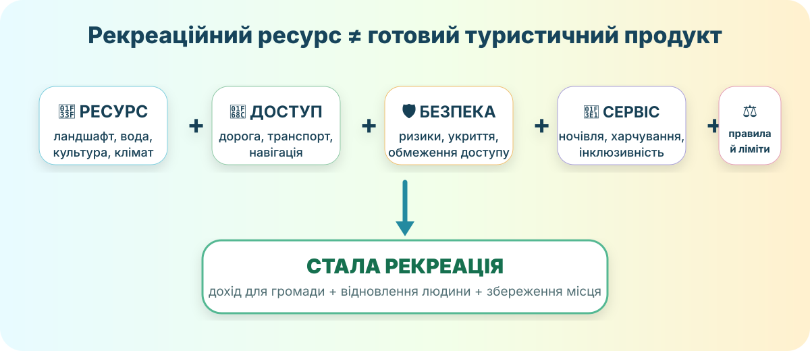
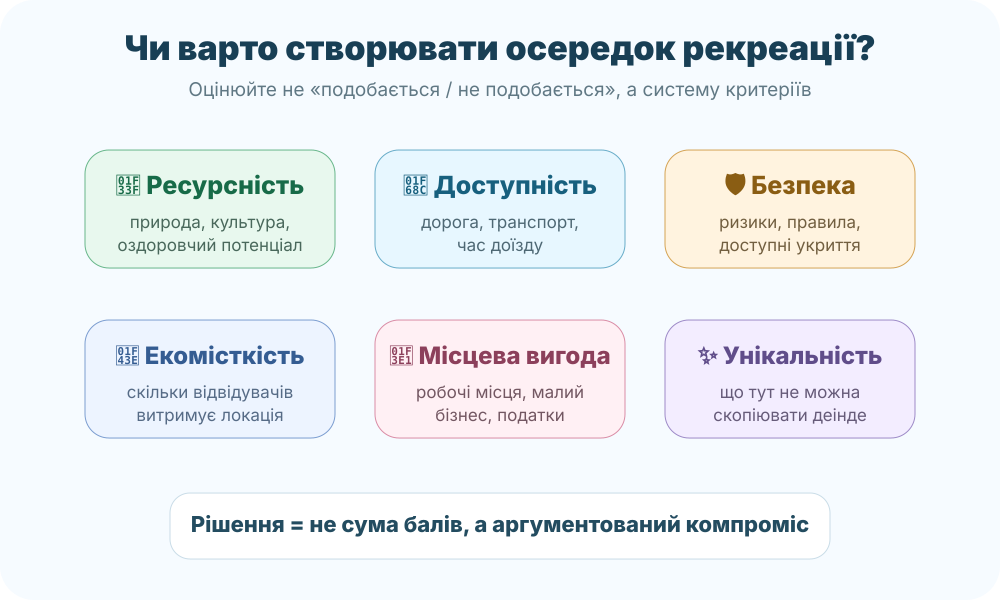

Що краще для громади?
Є природна локація біля річки, красивий ландшафт і 2 млн грн на розвиток. Оберіть перший крок.

Система, яку сьогодні перевіримо на реальному локальному кейсі.
Хортиця: ресурс є. А чи всюди можна рекреацію?
OpenStreetMap. Знайдіть острів Хортиця, ДніпроГЕС, мости, житлові райони й транспортні підходи.

Хортиця з космосу. NASA / Wikimedia Commons, public domain.
Реальна умова 2026 року
Національний заповідник нагадує: під час воєнного стану цивільним заборонено перебувати у лісових масивах, прибережних смугах і на мілинах острова. Відкритою лишається північно-східна частина біля туристичних об’єктів.
Національний заповідник «Хортиця», 23.01.2026
Висновок: рекреаційний ресурс без безпеки й правил не стає придатною рекреаційною територією.
Мікродослідження
Назвіть для Хортиці по одному прикладу: природного, історико-культурного, інфраструктурного рекреаційного ресурсу та обмежувального чинника. Потім поясніть, який із чотирьох зараз найсильніше визначає реальне використання території.
Сільський зелений туризм: «хатинка в селі» чи модель розвитку?
туристичного збору отримали місцеві бюджети України за 9 місяців 2025 року.
туристичного збору забезпечили малий бізнес, квартири, садиби та невеликі засоби розміщення.
Тобто локальна рекреація може розподіляти дохід між багатьма малими учасниками, а не тільки великими комплексами.
Що вважаємо зеленим туризмом?
Відпочинок у сільській місцевості, що спирається на місцеві природні ресурси, побут, культуру, історію, гастрономію та працю приватного господарства.
Пастка
«Зелений» у назві не гарантує екологічності. Якщо садиба генерує сміття без вивезення, перевантажує воду, пускає квадроцикли через степ або забудовує берег — це може бути туристичний бізнес, але не стала рекреація.
Чи створювати новий осередок рекреації?

Умовний кейс: громада має балку зі степовими схилами, ставок, старий млин і село за 18 км від міста. Є ідея зробити веломаршрут, 3 садиби, оглядовий майданчик і ярмарок локальної їжі. Оцініть локацію від 1 до 10.
Бал не ухвалює рішення замість Вас. Він лише змушує помітити слабке місце.
Ваше рішення
Оберіть один варіант і доведіть його:
Що може бути зміною?
- обмеження кількості відвідувачів;
- маршрут поза чутливими ділянками;
- підвіз замість великої парковки;
- контейнери, вода, туалет, навігація;
- правила пожежної та воєнної безпеки;
- частина доходу — на догляд за територією.
Коротка перевірка понять
Дивіться фрагмент приблизно 00:32–04:45. Випишіть:
- визначення рекреаційних ресурсів;
- три їхні типи;
- один приклад, який можна знайти у Вашому регіоні.
Тепер збираємо систему
Що таке рекреаційні ресурси?
Природні й створені людиною об’єкти та умови, які можна використовувати для відпочинку, оздоровлення, туризму, спорту й пізнання. Ресурсом може бути ландшафт, клімат, море, ліс, мінеральна вода, історична пам’ятка, традиція або їхнє поєднання.
Чому «чим більше туристів» не завжди краще?
Територія має рекреаційну місткість: після певного навантаження зростають ерозія стежок, сміття, шум, дефіцит води, пожежні ризики й конфлікти з місцевими мешканцями. Дохід може зростати швидше, ніж здатність екосистеми відновлюватись.
Коли зелений туризм справді корисний?
Коли дохід залишається в громаді, використовується місцева праця й продукти, зберігається культурна та природна спадщина, а правила обмежують шкоду. У 2026 році Україна знову подала села на ініціативу UN Tourism «Best Tourism Villages», де саме збереження ландшафтів, традицій і місцевої ідентичності є частиною критеріїв.
Чи потрібно використовувати рекреаційні ресурси?
C — Claim
Сформулюйте тезу одним реченням: «Рекреаційні ресурси потрібно / не потрібно / потрібно за умов…»
E — Evidence
Дайте щонайменше два докази: один із карти/локального кейсу, один із даних або правил.
R — Reasoning
Поясніть механізм: чому Ваші докази справді підтримують тезу.
§54 + мініаудит локації
1. Опрацюйте §54 «Яке значення рекреаційних ресурсів» в електронному підручнику.
2. Оберіть одну реальну локацію Вашого району/громади. Оцініть її за 6 критеріями з уроку та напишіть 4–6 речень: що розвивати, що обмежити, що зберегти.
3. Рівень «+»: придумайте один продукт сільського/зеленого туризму, який дає дохід місцевим і не руйнує головний ресурс території.